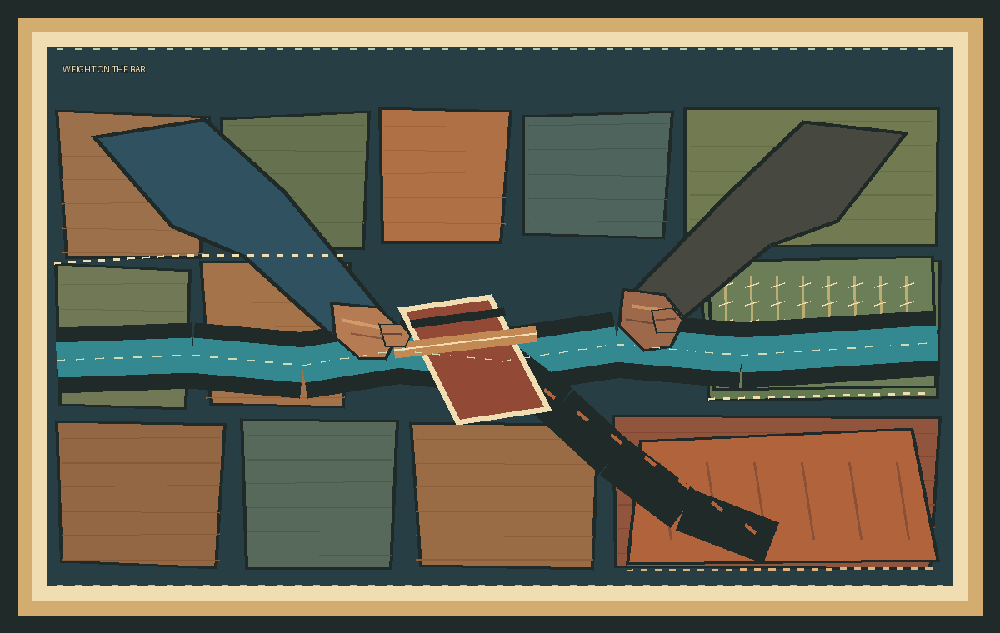

Weight on the Bar
Two workers meet at a gate crossbar. Their sleeves and hands carry the pressure together, while the channel divides beneath them: blue water reaches stitched rows; a rust-colored branch ends at dry ground. The fields are joined from uneven cloth blocks, and the seams remain visible across both outcomes.
An imagined scene informed by the wider history of irrigation around ancient Ma'rib. It does not depict a named worker, a specific gate, or a documented allocation. This digital textile is not a sewn physical quilt.